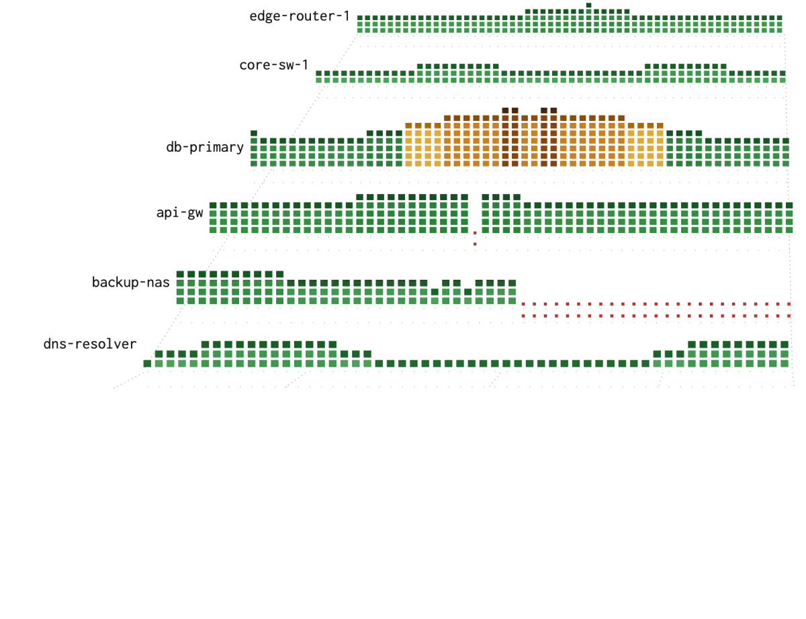

The table is the terrain.
-
uv tool install pinghue -
pinghue -f hosts.txt -
pinghue -f hosts.txt --duration 180 --output maintenance.json

| host | state | last | avg | jitter | loss | history |
|---|---|---|---|---|---|---|
| edge-router-1 | healthy | 6.19 | 12.77 | 1.61 | 0.00% | ▃▃▃▃▃▃▃▃▃▃▃▃▃▃ |
| core-sw-1 | healthy | 1.58 | 3.54 | 0.64 | 0.00% | ▃▃▃▃▃▃▃▂▂▂▂▂▂▂ |
| db-primary | intermittent | 12.62 | 119.19 | 33.94 | 0.00% | ▆▅▅▅▅▄▄▄▄▄▄▄▄▄ |
| api-gw | intermittent | 15.21 | 31.72 | 3.08 | 0.56% | ▄▄▄▄▄▄▄▄▄▄▄▄▄▄ |
| backup-nas | down | - | 9.61 | 1.60 | 14.12% | ·············· |
| dns-resolver | healthy | 5.37 | 2.28 | 0.37 | 0.00% | ▁▁▂▂▂▃▃▃▃▃▃▃▃▃ |
modes
pinghue 1.1.1.1 8.8.8.8pinghue -p 443 example.compinghue -p 443 example.com -c 3 --no-tui
icmp
The default. Concurrent echo probes to every host at once, in the full TUI with history, states, and keyboard control: r reset, R reset all, a addresses, b probe now.
tcp -p PORT
Connect checks on any port from 1 to 65535. No privileges needed. A refused connection gets its own ! marker, distinct from loss.
lines --no-tui
One line per probe for cron and CI, with fail-on-down exit codes and --output for the report.
2026-05-14T18:32:11.420000+00:00 example.com ok latency=14.08ms
one scale, every run
Latency maps to eight fixed glyphs. The scale never rescales, so a row from tonight reads the same as a row from last month. Green up to 100ms, amber above it, red for loss.
- ▁ ≤1ms
- ▂ ≤3ms
- ▃ ≤10ms
- ▄ ≤30ms
- ▅ ≤100ms
- ▆ ≤300ms
- ▇ ≤1000ms
- █ >1000ms
- · loss or down
- ! TCP refused
A host that drops one probe stays intermittent until you reset it. Three failures in a row and it is down until it answers again. The report reflects the whole run, not the last few seconds.
close the window with a report
$ pinghue -f hosts.txt --duration 180 --output maintenance.json{ "schema_version": 1, "pinghue_version": "5.1.0", "run": { "host": "local", "exit_reason": "deadline", … }, "targets": [ { "target": "db-primary", "status": "intermittent", "stats": { "sent": 180, "received": 178, "loss_pct": 1.11, … } } ]}- versioned contract
- The JSON carries
schema_version: 1. A breaking change requires a new schema version. - whole-run stats
statscovers every probe in the run.samplesis the recent tail.- private by default
- Reports are written
0600, and an existing file is never replaced without--overwrite.
what pinghue is not
- Not a Prometheus, Smokeping, Zabbix, or NMS replacement.
- Not a long-running metrics database or alerting system.
- Not a privileged daemon.
- Not a packet capture or traceroute tool.
- Not a service that accepts remote network requests.
A small local tool for maintenance windows, migrations, and quick reachability checks. Up to 1024 concurrent probes, no server, no daemon.
sixty seconds to a live table
- uv
uv tool install pinghue - pipx
pipx install pinghue - brew
brew install inxbit/tap/pinghue - pip
python -m pip install pinghue
macOS and Linux, Python 3.10 to 3.14. Then run the environment doctor: pinghue --check. On Linux, ICMP may need a one-line ping_group_range fix, or use TCP mode.